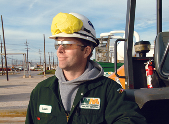

Awards

2010
- EPA (LMOP) Projects of the Year: University of New Hampshire Eco-Line Project, and Altamont Landfill Resource and Recovery Facility
- Blogger's Choice award in the environmental category for Mashable.com's 2nd Annual Open Web Awards
2009
- WM Named to the DJSI for the 5th straight year
- 'Best 50' Award – Judy Archibald — Pennsylvania Department of Community and Economic Development
- Member of the Quarter – Greater Taylorville Chamber of Commerce
- American Legion Honor – Jeff Olsen – Flag Day
- 2009 Corporate Environmental Pioneer – Waste Management– New York League of Conservation Voters
- Environmental Partnership award – Alliance Landfill – Abington Area Joint Recreation Board
- Number 6, Top 500 Fleets – WM – Fleet Owner Magazine
- The Torch Award – Waste Management of New York – Better Business Bureau
- 2009 Community Involvement Award – Wheelabrator Technologies – Broward County Partners In Education
- 2009 Best Practice Award – Sustainable Fla. Collins Center – WM of Florida
- Special Governor's Award – NSWMA – Minnesota Chapter – Julie Ketchum
- 2009 Forest Stewardship Award – Schuylkill (Pa.) Conservation District – Pine Grove LF
- Top 100 Most Military-Friendly Co. – G.I. Jobs magazine
- Sector Leader In The Waste And Industrial Services Sector, SAM Sustainability Yearbook
- 2009 "Outstanding Award" for public/private partnerships, Mayors Business Council, a division of the United States Conference of Mayors
- Institutional Investor's List of America's Best CEOs – David Steiner ranked #2 in Environmental Category
- Placed 109 in Newsweek's Inaugural "Greenest Big Companies In America," taking the environmental services category
- Business of The Year, Northfield News, MN
- Certification for 24 new sites, and receertification of 18 other sites, from the Wildlife Habitat Council
- California Integrated Waste Management Board's Waste Reduction Awards Program honor – Waste Management of Orange County
- 2009 Clean Air Circle Honoree – Waste Management of San Diego
- Environmental Responsibility Award, Industrial Environmental Association – Waste Management of San Diego
- LMOP 2009 Project of the Year — Altamont Landfill
- 2009 "Outstanding Award" for public/private partnerships from the Mayors Business Council – Manhattan Beach
- Business of the Year — Northfield Chamber of Commerce, MN
2008
- WM Named California Climate Action Leader – May 2008
- Waste Management of San Diego – Environmental Responsibility Award, Industrial Environmental Association
- San Diego EARTH Award – 2008
- 2008 Ethisphere's List of World's Most Ethical Companies
- 2008 – California Climate Action Leader
- 2008 – Outstanding Achievement Award in Public/Private Partnerships
- World Business Council for Sustainable Development "Sustainability Leader" for the Waste and Disposal Services Sector, 2007-2008
- Dow Jones Sustainability Index
- Second in Institutional Investor Survey Top Shareholder-Friendly Companies
- 2008 – Exemplary Environmental Enterprise award – Virginia Environmental Excellence Program
- 2008 – Waste Management of San Diego – EARTH award – San Diego EarthWorks
- 2008 Diversity Leader Award
- 2008 Business Partnership Award – WM of New Jersey — NJ Department of Environmental Protection and the NJ Clean Communities Council
- Austin Chamber of Commerce Business Awards Nomination – Environment WM Driver, John Moore selected as driver of year by the Environmental Industrial Association
- 2008 Outstanding Contribution Award presented at Columbia University – Artie Cole — Waste-to-Energy Research and Technology Council's (WTERT)
- 2008 Waste Watcher Award – Alliance Landfill & Apex Waste Services
- Alliance Landfill – 2008 Corporate Lands for Learning Project of the Year – Wildlife Habitat Council
- Barre Landfill — International Habitat Conservation Award – Wildlife Habitat Council
- Waste Management of Indiana at Twin Bridges – Corporate Lands for Learning (CLL) certification by the WHC
- William W. Howard C.E.O. Award – David Steiner – Wildlife Habitat Council
- 2008 Visionary Award – Director of Government Affairs & former Chairman Thane Harrison – Economic Alliance Houston Port Region
- 2008 – Orange County Receives Cal/OSHA's Safety Certification
- Grayslake Recycling Plant – Merit Status – OSHA
- WM of Sacramento – Top Supplier Sacramento Municipal Utility District (SMUD)
- "Five Diamond" certification – WM Security Services – Central Station Alarm Association (CSAA)
- Corporate Leadership Award – WM of San Diego – Mothers Against Drunk Driving (MADD)
- VPP Star Certification – Wheelabrator Norwalk
- 2008 Friend of EPA Award – WM Landfill Operator Jason Chan
- 2008 Louise Godwin Award for Excellence – Buford Clark – Keep Mississippi Beautiful
- Award of Excellence in the Neighborhood Watch – WM's Waste Watch Program – National Sheriffs' Association
- Inaugural Leadership Award, Bill Cole, WM Safety, Canon Technology Solutions
- Environmental Achievement Award – WM of Pasco – Pasco County, FL
2007
- The U.S. Department of Commerce honored Waste Management with its Technology Administration's "Recognition of Excellence in Innovation."
2006
- DiversityBusiness.com – Supplier Diversity honored WM
- Service Industry Advertising Awards – Best in Show award for a total public relations campaign – WM's Think Green ad campaign
- Los Angeles Business Journal – Top Environmental Firm – May 2006
- New Mexico Recycling Coalition – Business Recycler of the Year – June 2006
- Tyson Foods – Supplier of the Year – June 2006
- Occupational Safety and Health Administration – VPP Star Certification
- Environmental Industry Association – Driver of the Year Award (Large Company Industrial)